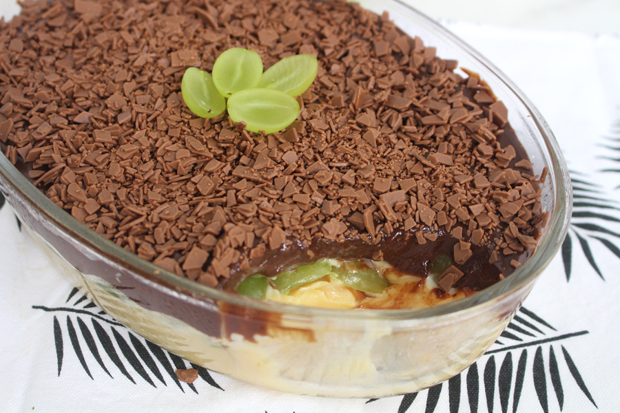

|
|
|
Mousse de limão rápidoSe você está procurando uma receita de mousse de limão rápida e fácil, veio ao lugar certo! Essa receita é feita com suco de limão, sem gelatina e leva apenas 4 ingredientes! Confira agora mesmo como fazer! |
|
Ingredientes
Modo de Preparo
|
|
Confira outras receitas |
|

Brigadeiros Gourmet de Nozes |

Strogonoff de carne |

Massa de pizza italiana |

Caipirinha |

Bombom de travessa |

Lasanha |